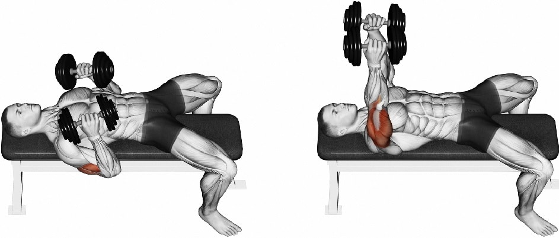
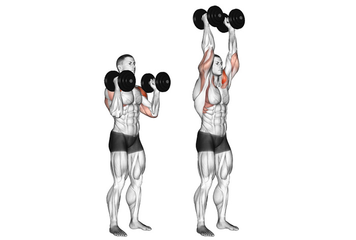
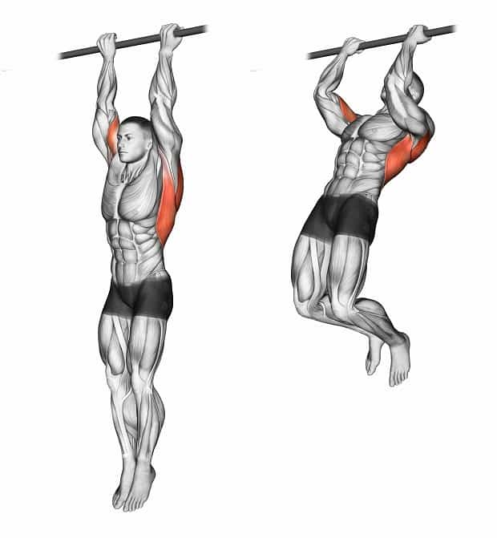

Жизнь - спорт
В современном мире значительное место занимает спорт. Разнообразие видов спорта позволяет
выбрать именно тот, что подходит индивидуально вам. Каждый из них развивает в человеке
различные способности: сила, ловкость, скорость, смекалка, меткость, реакция и др. Но
спорт на земле появился уже достаточно давно. Так, например, древние греки устраивали
олимпийские игры, чтобы найти самого сильного и быстрого спортсмена. В наши дни очень
высокая смертность людей из-за сердечно-сосудистых заболеваний, а именно 938 536 человек.
Это очень плохо и цифры поражают. А ведь обычная утренняя прогулка или пробежка, а также
простые общеразвивающие упражнения помогут изменить данную статистику в лучшую сторону.
В данном проекте мы предоставим вам ряд упражнений, которые помогут вам сбросить лишний
вес, увеличить силу и выносливость, а также набрать мышечную массу.Спорт играет значительную
роль в жизни человека. Он укрепляет здоровье, воспитывает характер, делает человека сильным
и выносливым, закаляет тело. Помимо того, мне кажется, занятия спортом поднимают настроение.
Я полагаю, что спортом заниматься следует каждому человеку. Спорт укрепляет здоровье, улучшает
физические данные. Человека, занимающегося спортом, сразу видно. Он выделяется подтянутостью,
красивой осанкой. Не Случайно говорят: «В здоровом теле – здоровый дух!» Люди, занимающиеся
спортом, меньше болеют. Физические упражнения возвращают здоровье многим людям. Я читала о
русском циркаче Дикуле, который выступал с номером, где поднимал пудовые гири. С ним произошло
беда – он угодил в автокатастрофу. В Дальнейшем он лежал в больнице со сломанной спиной.
Вернуться к нормальной жизни и снова выступать на арене цирка он смог благодаря ежедневным физическим
упражнениям. Я считаю, что в этом и состоит польза занятий спортом.
Спорт приносит большую радость. Люди ходят в секции, посещают спорт – клубы, играют в спортивные игры,
закаляются и общаются с новыми людьми. Спортивные командные игры приносят радость победы. Поездки в разные
города и страны на соревнования – наиболее интересная сторона спорта.
Утренняя зарядка
Каждое утро должно начинаться с простой зарядки с несложными упражнениями. Первое - это пробежка. Она необходима, чтобы встрехнуться и взбодриться. Затем обычная разминка, чтобы тело было функциональным на протяжении всего дня разминка. Мы предлагаем же начать с самых простых упражнений, которые помогут вам проснуться и набраться сил на весь предстоящий день.1)Наклоны головы вперед, назад, вправо, влево (5 повторений)
2)Вращение кистями на себя и от себя (по 10 повторений)
3)Вращение руками в локтях на себя и от себя (по 10 повторений)
4)Полное вращение рук на себя и от себя (10 повторений)
5)Вращение тазом вправо и лево (по 5 повторений)
6)Наклоны вперед, назад, вправо, влево(по 5 повторений)
7)Выпады на правую и левую ноги поочерёдно (по 5 повторений)
8)Вращение галиностопом вправо и влево (по 5 повторений)
Списки упражнений
На данном сайте вам будут даны списки упражнений. Таких списков несколько, и чем выше цифра их нумерации, тем более сложные задания в них. список поможет вам начать свою спортивную жизнь и оптимизировать своё тело к дальнейшим более сложным упражнениям. если вы их будете выполнять каждый день, то уже через неделю вы почувствуете результат. вам станет легче преодалевать различные растояния пешком, обычная ежедневная работа по дому станет не такой изнурительной и т.д. Но нельзя забывать, что перед каждым занятием нужна короткая разминка, чтобы подготовить своё тело. Можно использовать упражнения из зарядки.Список №1
1) Приседания (15 - 20 повторений)Исходное положение - ноги на ширине плеч, руки на пояс. На раз - присели, руки вытянули перед собой. Два - исходное положение.
Приняли положение лёжа, опираясь на руки - это исходное положение. На раз - согнули руки в локтях, чтобы получился угол 90 градусов, и опустились. На два - поднялись в исходное положение
Ложимся на ровную поверхность на спину,ноги сгибаем в коленях так, чтобы получился угол в 90 градусов между бедром и голенью, руки можно просто выпрямить перед собой, закрепить в замок на затылке или положить на грудь, затем поднимаем корпус к коленям и возвращаемся в лежачее положение.
это когда вы скручиваете низ тела (таз) по отношению к верху тела, т.е. отчасти помимо мышц живота (пресса), в работе участвуют и мышцы ног (бедра).
5)Зашагивание (по 10 раз на ногу)
Можно взять стул или лавочку, нужно встать лицом к опоре и начать зашагиват на неё, как на ступень, ставя изначально правую ногу первой, потом левую.
Если вы чувствуете, что вам не хватило нагрузки, то сделайте вторую серию данных упражнений. Когда ваша физическая подготовка станет выше, или вы изначально были спортивно подготовлены, то тогда можно переходить к более сложным заданиям, которые представлены в списке №2.
Список №2
1) Отжимания (15 - 20 повторений)Приняли положение лёжа, опираясь на руки - это исходное положение. На раз - согнули руки в локтях, чтобы получился угол 90 градусов, и опустились. На два - поднялись в исходное положение
Исходное положение - лечь на правый бок. Заведите руки за голову, согните ноги в коленях и наклоните их в левую сторону. Напрягите живот и приподнимите корпус, поворачивая его в правую сторону. Точно также и на другом боку
3) Бёрпи (15 - 20 повторений)
Исходное положение - ноги на ширине плеч, руки на пояс. На раз - приняли упор присев, на два - приняли упор лёжа, на три - приняли упор присев, на четыре - прыжок из присяди.
Приняли положение лёжа, руки согнуты в локтях, держим такое положение на протяжении 1 минуы, тело должно быть прямым, изображая линию.
Для следующего списка нам понадабятся гантели. Если у вас нет гантелей, то можно использоват бутылки с водой. В данном списке упражнения направлены на отдельные группы мышц, благодаря чему вы можете самостоятельно выбирать, какие мышцы вы будете развивать в своём теле.
Список №3
1) Бицепс- Сгибание рук сидя с гантелей
- Подъем гантели из-за головы двумя руками


3)Грудь- Разводка рук лёжа на скамье с гантелями
- Армейский жим гантелей

- Разведение рук с гантелями стоя- Подьём плеч с гантелями (Шраги)
Список №4
Также физические упражнения можно делать на турнике, что укрепит ваши руки и хватку. Количество повторений по самочуствию.1) Подтягивание
- Подтягивание широким хватом

- Подтягивание прямым класическим хватом